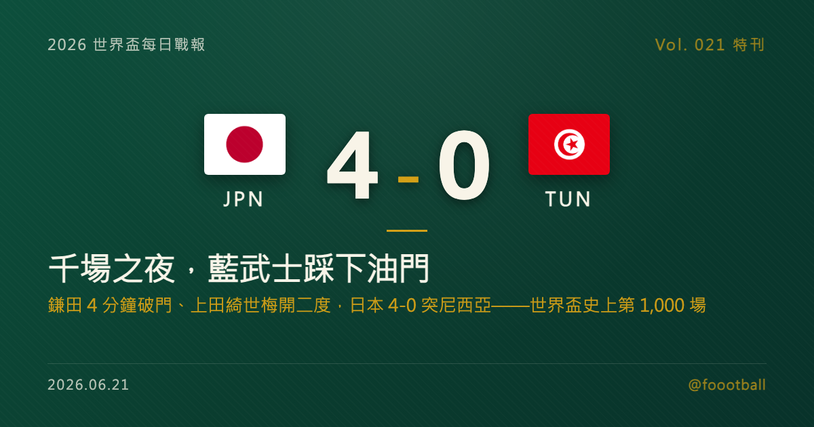

千場之夜，藍武士踩下油門：日本 4-0 突尼西亞全解析
2026 世界盃 F 組次輪，日本在蒙特雷 4-0 完勝突尼西亞。鎌田大地第 4 分鐘破門、改寫日本隊在世界盃的最快進球紀錄，上田綺世梅開二度，伊東純也單刀再添一城。這場比賽也被 FIFA 記為世界盃史上第 1,000 場。日本與荷蘭同積 4 分並列領跑 F 組，末輪對瑞典將是出線關鍵。這篇特刊，把四顆球、日本的調整與軌跡，逐項拆開來講。

2026 世界盃特刊｜Vol. 021 番外
有些勝利，份量不只寫在計分板上。
2026 年 6 月，在墨西哥蒙特雷，日本 4-0 完勝突尼西亞。四球零封、全場壓制，這是一場乾脆俐落的大勝；而它之所以更值得被記住，是因為它恰好落在一個特別的座標上——這場比賽，被 FIFA 記為世界盃史上第 1,000 場正式比賽。從 1930 年烏拉圭蒙特維多的揭幕戰，到 96 年後的這個夜晚，世界盃走到了第一千個整數，而替這個數字寫下註腳的，是一支正踩著油門加速的亞洲球隊。
這一夜值得慢慢拆——先拆這四顆球，再拆上田綺世的中鋒答卷，接著拆森保一的調整與日本的小組賽軌跡，最後，也聊聊「第 1,000 場」這個座標背後的世界盃歷史。
一、四顆球的解剖：從第 4 分鐘的閃電，到第 84 分鐘的句點
日本這場勝利的底色，是「開場就掌握主動、再一路滾大優勢」。
第 4 分鐘，第一球——鎌田大地破門，改寫隊史紀錄。 比賽才開場三分半，日本就組織起第一波有威脅的進攻：中場兩腳直塞推進到禁區左側，中村敬斗從左路底線位置傳向門前，鎌田大地在突尼西亞門前的人叢中用腳一搗，皮球應聲入網。據多家媒體統計，這也改寫了日本隊在世界盃決賽圈的最快進球紀錄。對日本而言，這顆球的意義遠不只是 1-0——它讓球隊在最焦慮的開場階段就卸下了壓力，把節奏牢牢握在自己手裡。
第 31 分鐘，第二球——上田綺世怒射遠角。 領先後的日本踢得更從容。第 31 分鐘，日本再度由中場發起進攻、進攻球員三路排開，上田綺世在禁區右側邊緣拿球後沒有分球，而是直接起腳怒射，皮球直掛突尼西亞球門遠角，2-0。這是一記純粹靠個人終結能力打進的球——不需要複雜的配合，只需要一個敢拔腳、且拔得夠準的前鋒。
第 69 分鐘，第三球——伊東純也單刀推射。 下半場日本一度放緩，直到第 69 分鐘才再度撕開突尼西亞的防線：日本從中場送出一記穿透性的挑傳，越過突尼西亞後衛防線，伊東純也迅速跟進、面對門將一人，冷靜推射球門右下角破網，3-0。老將伊東的這顆球，是日本邊路速度與直塞默契的縮影。
第 84 分鐘，第四球——上田綺世頭槌，個人梅開二度。 終場前，日本把比分推到了 4-0：佐野海舟右路下底傳中，上田綺世高高躍起、頭槌頂入，完成個人本場的梅開二度（此球部分媒體記為第 83 分鐘）。一腳怒射、一記頭槌，兩種完全不同的方式——上田用這對進球，給自己的中鋒身分蓋了一個結結實實的章。
一記閃電破門、一記遠射、一記單刀、一記頭槌，四顆球的得分方式各不相同，串起來幾乎是一張「強隊該如何處理防守型對手」的範本：早進球、控節奏、在對手體能下滑時繼續加碼。
二、上田綺世：梅開二度的中鋒答卷
把鏡頭拉近到上田綺世，會發現這對進球並不是偶然。
對任何一支球隊而言，「九號位能不能穩定進球」往往是衝擊力的天花板。上田綺世本場的兩顆球，恰好展示了一名現代中鋒該具備的兩種能力：一是禁區邊緣的遠射威脅——第 31 分鐘那記直掛遠角的射門，是把握住「對手退防、留出射門空間」瞬間的果決；二是禁區內的搶點能力——第 84 分鐘的頭槌，是中鋒最傳統、也最不可替代的價值。
更重要的是，這對進球給森保一帶來的，是一份「鋒線可以信任」的安全感。世界盃的小組賽末輪與淘汰賽接踵而來，輪換與體能都要精打細算；而當球隊知道前場有一個能在不同情境下都拿得出進球的支點時，整體的戰術安排就多了一份從容。對日本這支以團隊、紀律見長的球隊而言，一個狀態正佳的中鋒，是把「踢得好看」轉化成「贏得乾脆」的關鍵拼圖。
三、森保一的調整：久保建英缺陣下的日本
值得一提的是，日本這場大勝，是在缺少一張重要進攻牌的情況下打出來的。
賽前，效力皇家社會（Real Sociedad）的久保建英確定缺陣。面對這個變動，森保一的調整相當務實：以菅原由勢補上邊路的位置、讓堂安律往前推進到更靠近進攻的區域，其餘的首發架構則大致維持不變。這套調整背後，是日本長年積累的厚度——當一名主力因故無法上陣，球隊不必傷筋動骨，就能由替補與位置微調把缺口補上。
而本場的結果，也替森保一的選擇背書。日本沒有因為久保的缺席而失去進攻的層次：鎌田大地的策動、中村敬斗的傳中、上田綺世的終結、伊東純也的衝擊、佐野海舟的助攻——進球分散在不同球員腳下，正說明這支日本的火力來源不依賴單一個人。對一支志在走得更遠的球隊而言，這種「少了誰都還能贏」的整體性，往往比任何一名球星的靈光一閃，都更接近強隊的本質。
當然，話也要說回來：對手是兩戰皆墨、防線壓力巨大的突尼西亞，這場 4-0 的含金量，仍要等到日本對上更高強度的對手時，才會真正被檢驗。但至少在這個夜晚，日本把「該贏的球乾脆地贏下來」這件最基本、也最容易被低估的事，做得無可挑剔。
四、日本的小組賽軌跡：從逼平荷蘭，到完勝突尼西亞
要看懂這場 4-0 的份量，得把鏡頭倒回首輪。
首輪面對歐洲強權荷蘭，日本踢出了一場高水準的 2-2。那場球，日本兩度落後、又兩度追平，終場前由鎌田大地攻入關鍵的扳平球，從世界排名更高的荷蘭身上搶下寶貴的一分。那是一場「雖未取勝、卻贏得尊重」的演出——它讓外界看到，這支日本面對頂級對手時並不怯場。
而次輪對突尼西亞，則是另一種考題：面對實力稍遜、退防扎實的對手，日本能不能避免「控而不破」的悶局，乾脆地拿下三分？答案是肯定的。從首輪逼平荷蘭，到次輪完勝突尼西亞，日本走出了一條漂亮的曲線——對強隊不丟臉，對必須拿下的比賽不手軟。兩輪過後一勝一和、積 4 分，與荷蘭並列 F 組領跑，正是這條曲線最直接的回報。
F 組的出線算盤。 兩輪戰罷，F 組的形勢相當膠著。荷蘭與日本同積 4 分、同為淨勝球 +4，僅靠進球數（荷蘭 7、日本 6）分出暫時的先後，荷蘭暫居頭名；瑞典 3 分緊追，突尼西亞兩戰皆墨、已確定出局。這意味著末輪將是一場多線並進的好戲：日本對上已無退路的瑞典——日本只要贏球，就有望力壓荷蘭搶下頭名；而瑞典若取勝，則能直接反超日本、改寫整組的晉級格局。同一時間，荷蘭對上已經出局的突尼西亞，理論上佔得便宜，但最終的頭名歸屬，仍要看日本那一場的結果。對日本來說，把命運握在自己腳下的感覺，再好不過。
五、第 1,000 場：96 年，從蒙特維多到蒙特雷
最後，回到那個讓這一夜與眾不同的數字——1,000。
世界盃的第一場比賽，要追溯到 1930 年的烏拉圭蒙特維多：那一天，法國 4-1 擊敗墨西哥、美國 3-0 擊敗比利時，世界足球最高殿堂就此揭幕。96 年之後，這項賽事累積到了 FIFA 記載的第 1,000 場正式比賽，而承接這個整數座標的，正是日本與突尼西亞在蒙特雷的這場較量。
一千場比賽裡，有過無數的經典與遺憾、奇蹟與心碎。對日本球迷而言，能在這樣一個具有歷史刻度的夜晚，看著自己的球隊踢出一場 4-0 的完勝、由鎌田大地改寫隊史最快進球紀錄、看著上田綺世梅開二度——這份巧合，本身就是一段值得收藏的記憶。
至於突尼西亞，這支北非球隊兩戰皆墨、已確定出局，這個夜晚對他們而言無疑是苦澀的。但世界盃的舞台從來都是這樣：有人在第 1,000 場寫下高光，也有人在同一場默默告別。能站上這個舞台、成為這項百年賽事一千場歷史的一部分，本身就有它的重量。
而對日本來說，引擎已經發動。末輪對瑞典的出線生死戰，才是這支藍武士真正想要的舞台。
六、藍武士的天花板：日本想要的，不只是出線
把視野拉得更遠一點，會發現這支日本想要的，恐怕遠不只是「小組出線」這四個字。
過去多屆世界盃，日本都曾闖進淘汰賽，卻一次又一次倒在十六強這道門檻前——八強，始終是這支亞洲勁旅未能跨過的天花板。對日本足球而言，「能穩定踢進世界盃、甚至殺進淘汰賽」早已不是新聞；真正讓球迷魂牽夢縈的，是那扇始終差一步推開的八強大門。正因如此，本屆小組賽每一場的份量，都不只關乎晉級與否，更關乎日本能以什麼樣的姿態、什麼樣的籤位，走進淘汰賽。
而這也是「搶頭名」之所以重要的原因。在 48 隊、賽程更長的本屆世界盃，淘汰賽的對位由小組名次決定——同樣是晉級，以頭名出線，往往能在淘汰賽初期避開另一組的強敵，替後續的征途鋪一條相對平緩的路。日本首輪能從荷蘭身上搶下一分、次輪又乾脆地拿下突尼西亞，正是把「不只想出線，更想出好線」這個企圖，一步步落到實處。
當然，從一場對突尼西亞的完勝，到真正叩開八強的大門，中間還隔著漫長而險峻的路。但這支日本至少把該做的事做對了：對強隊不怯場、對必須拿下的比賽不手軟，把命運牢牢握在自己腳下。末輪面對瑞典，將是這份企圖的第一道真正試煉——也是外界檢驗這支藍武士成色的最好窗口。
常見問題
Q：日本 4-0 突尼西亞，進球都是誰打進的？ A：日本四顆球分別由鎌田大地（第 4 分鐘）、上田綺世（第 31、84 分鐘，梅開二度）、伊東純也（第 69 分鐘）攻入。其中鎌田開賽第 4 分鐘的破門，據多家媒體統計改寫了日本隊在世界盃決賽圈的最快進球紀錄。
Q：為什麼說這場是世界盃第 1,000 場？ A：世界盃自 1930 年於烏拉圭蒙特維多揭幕（首日法國 4-1 墨西哥、美國 3-0 比利時），歷屆累積的正式比賽到本場恰好達到第 1,000 場。多家媒體與 FIFA 均以此標記這場日本對突尼西亞之戰的歷史意義。
Q：日本出線了嗎？末輪要對誰？ A：尚未確定。日本與荷蘭同積 4 分、同淨勝球 +4，荷蘭以進球數暫居頭名。末輪（美加墨 6/25）日本將對上積 3 分的瑞典——這是一場出線生死戰：日本贏球有望搶下頭名，瑞典若取勝則能反超。最終形勢要等末輪才會明朗。
Tags: 世界盃, 2026世界盃, 日本, 上田綺世, 鎌田大地, 伊東純也, 森保一